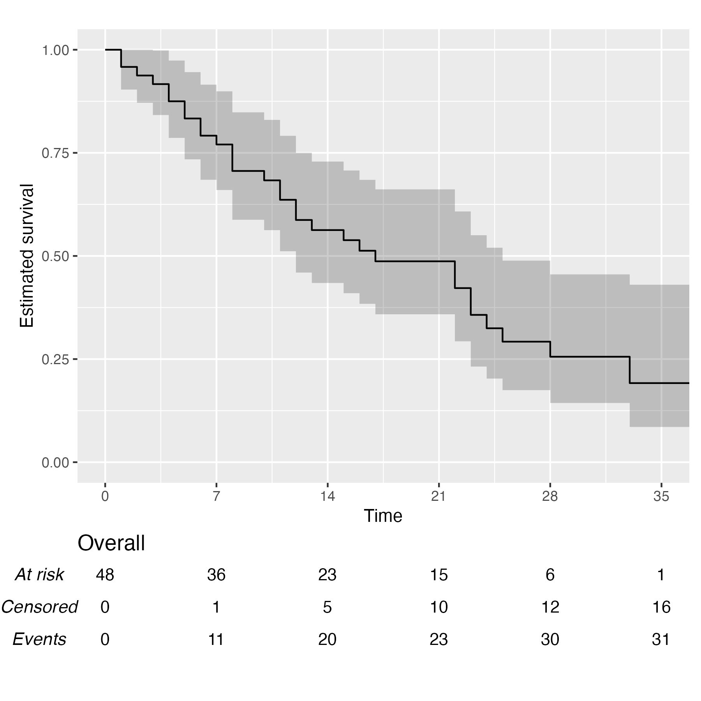

The goal of {KMunicate} is to produce Kaplan–Meier plots in the style recommended following the KMunicate study (TP Morris et al. Proposals on Kaplan–Meier plots in medical research and a survey of stakeholder views: KMunicate. BMJ Open, 2019, 9:e030215).
Installation
You can install {KMunicate} from CRAN by typing the following in your R console:
install.packages("KMunicate")Alternatively, you can install the dev version of {KMunicate} from GitHub with:
# install.packages("devtools")
devtools::install_github("ellessenne/KMunicate-package")Example
library(survival)
library(KMunicate)The {KMunicate} package comes with a couple of bundled dataset, cancer and brcancer. The main function is named KMunicate:
KM <- survfit(Surv(rectime, censrec) ~ hormon, data = brcancer)
time_scale <- seq(0, max(brcancer$rectime), by = 365)
KMunicate(fit = KM, time_scale = time_scale)
KM <- survfit(Surv(studytime, died) ~ drug, data = cancer2)
time_scale <- seq(0, max(cancer2$studytime), by = 7)
KMunicate(fit = KM, time_scale = time_scale)
You also might wonder, does this work with a single arm? Yes, yes it does:
KM <- survfit(Surv(studytime, died) ~ 1, data = cancer2)
time_scale <- seq(0, max(cancer2$studytime), by = 7)
KMunicate(fit = KM, time_scale = time_scale)
Finally, you can also plot 1 - survival by using the argument .reverse = TRUE:
KM <- survfit(Surv(rectime, censrec) ~ hormon, data = brcancer)
time_scale <- seq(0, max(brcancer$rectime), by = 365)
KMunicate(fit = KM, time_scale = time_scale, .reverse = TRUE)
Customise Risk Table
By default, KMunicate() will build a risk table conform to the KMunicate style, e.g., with cumulative number of events and censored (the column-wise sum is equal to the total number of individuals at risk per arm):
KM <- survfit(Surv(rectime, censrec) ~ hormon, data = brcancer)
time_scale <- seq(0, max(brcancer$rectime), by = 365)
KMunicate(fit = KM, time_scale = time_scale)
Alternatively, it is possible to customise the risk table via the .risk_table argument. For instance, if one wants to have interval-wise number of events and censored, just pass the survfit value to the .risk_table argument:
KMunicate(fit = KM, time_scale = time_scale, .risk_table = "survfit")
This is the default output of the summary.survfit() function.
Finally, it is also possible to fully omit the risk table by setting .risk_table = NULL:
KMunicate(fit = KM, time_scale = time_scale, .risk_table = NULL)
Custom Fonts
Assuming you have set up your computer to use custom fonts with ggplot2, customising your KMunicate-style plot is trivial. All you have to do is pass the font name as the .ff argument:
KM <- survfit(Surv(studytime, died) ~ 1, data = cancer2)
time_scale <- seq(0, max(cancer2$studytime), by = 7)
KMunicate(fit = KM, time_scale = time_scale, .ff = "Victor Mono")